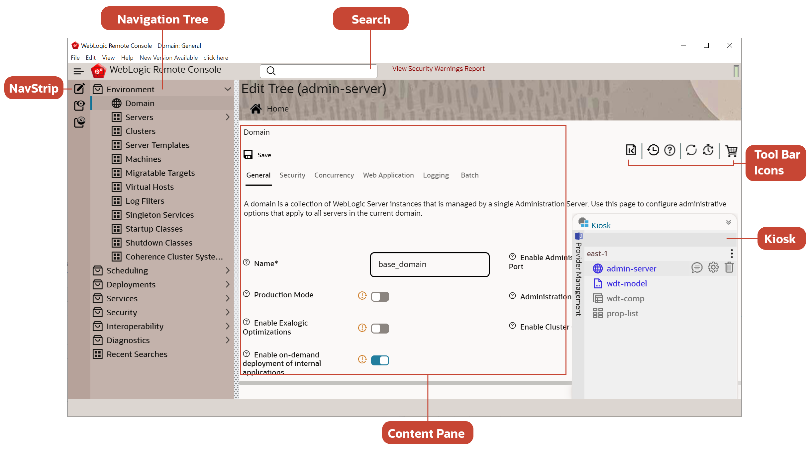
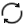

WebLogic Remote Consoleの確認
WebLogic Remote Consoleは、WebLogic Serverドメインを管理するための代替オプションを提供します。 管理サーバーを編集できるだけでなく、WebLogic Deploy Tooling (WDT)モデル・ファイルおよびプロパティ・リストも作成できます。
WebLogic Remote Consoleは管理コンソールと多くの機能を共有しますが、その機能は若干異なります。 詳細は、「管理コンソールとの相違点」を参照してください。
基本レイアウト

WebLogic Remote Consoleは、様々なプロバイダ間で若干異なる単純なユーザー・インタフェースを示します。 広範に、次の領域に配置されます:
-
「キオスク」 - 現在の「計画」、その「プロバイダ」および接続の詳細を管理します。 プロジェクト・ファイルをインポートおよびエクスポートすることもできます。 管理サーバー・プロバイダでは、Kioskには、Change Managerを含むショッピング・カートと、ドメイン構成に加えた変更も含まれます。 ショッピング・カートから直接変更をコミット(または破棄)できます。
コンソール拡張
console-rest-ext-6.0.warがインストールされている場合は、ドメインの特定の保留中の変更を確認できます。 -
NavStrip - ナビゲーション・ツリーの表示()を切り替えて、管理サーバー・プロバイダでパースペクティブ間を移動します。
-
「ナビゲーション・ツリー」 - ドメイン構造を解析し、各最上位ノードを展開して詳細情報を表示します。 ナビゲーション・ツリーは、現在アクティブなプロバイダによって異なります。
-
「コンテンツ・ペイン」 - アクティブなプロバイダのプロパティを確認および編集します。
現在のプロバイダの接続ステータスは、コンソールの右上隅に表示されます。
- 管理サーバー接続は、「緑色」 (接続済)または「赤色」 (接続なし)のいずれかです。
- WDTモデル・ファイル、WDTコンポジット・モデルおよびプロパティ・リストは常に「黄色」 (オフライン)です。
WebLogic Remote Consoleは、オペレーティング・システムの言語を自動的に検出および照合します。
パースペクティブ
各プロバイダ・タイプには、少なくとも1つのパースペクティブ(プロバイダによって提供されるデータの表現)があります。 複数のパースペクティブを持つプロバイダでは、各パースペクティブがプロバイダの異なる側面に優先順位を付けます。
| プロバイダ・タイプ | パースペクティブ |
|---|---|
| 管理サーバー |
|
| プロパティのリスト | プロパティ・リスト・エディタ: キーと値のペアの編集可能なリスト。 |
| WDTモデル・ファイル | WDTモデル・ツリー: WebLogic ServerドメインのWDTモデルの編集可能なビュー。 |
| WDTコンポジット・モデル | WDT複合モデル・ツリー: WebLogic Serverドメインの複数のマージされたWDTモデル・ファイルの読取り専用ビュー。 |
ドメインのナビゲート
WebLogic Remote Consoleでは、WebLogicドメインの構造を複数の方法で移動できます:
-
「ナビゲーション・ツリー」 - ノードを展開し、目的の情報が表示されるまでドリルダウンします。
-
「ブレッドクラム」 - 現在のページの階層パスを確認し、別のパースペクティブから関連ページにジャンプまたはジャンプします。 たとえば、ツリーの編集のドメイン/サーバーから、ブレッドクラム・トレイルからモニタリング・ツリーの環境/サーバーにジャンプできます。
-
「検索」 - バーに検索語を入力し、検索語に一致するBeanをすべて表示します。 前の検索は、ナビゲーション・ツリーの下部にある最近の検索ノードにあります。 検索および検索履歴は、パースペクティブおよびプロバイダ内でのみ実行されます。
コンソール・プリファレンスの変更
ニーズに合せてWebLogic Remote Consoleの動作を変更できます。
- WebLogic Remote Consoleで、「ファイル」 > 「プリファレンス」に移動します。 (macOSではWebLogic Remote Console > 「アプリケーション・プリファレンス」)。
- セクション・タブを選択し、必要に応じて変更します。
- 「プリファレンス」ダイアログ・ボックスを閉じて、変更を適用します。
ツール・バー・アイコン
コンテンツ・ペインの上部には、次のアイコンが表示されます:
-
: ホーム - パースペクティブのリストとともにプロバイダ・ホーム・ページに戻ります
-
: ランディング・ページ - 現在のパースペクティブのランディング・ページに戻ります
-
 : ナビゲーション履歴 - 表示されたページへのクリック可能なリンクのリストを含むメニューが表示されます。 この履歴はパースペクティブです。
: ナビゲーション履歴 - 表示されたページへのクリック可能なリンクのリストを含むメニューが表示されます。 この履歴はパースペクティブです。 -
: ヘルプ - ページに表示される属性に関する参照情報を示します。
-
 : リロード - 自動リロード間隔が設定されていない場合は、フォームまたは表を1回リロードします。 このアイコンは、リロード間隔が設定されるとアクティブ()に変わります。 アイコンをクリックして、自動リロードのオンとオフを切り替えます。
-
自動リロード間隔 - フォームまたは表の自動リロードのために、指定した時間間隔を秒単位で設定またはクリアします。 別のタブを選択するか、別のページに移動すると、自動ページのリロードが停止します。
-
/
 : ショッピング・カート - 管理サーバーへの変更のステータスを示します。 フル・ショッピング・カート・アイコン()は、ドメインに対する保留中の変更を示します。 変更を表示、破棄またはコミットする場合にクリックします。
: ショッピング・カート - 管理サーバーへの変更のステータスを示します。 フル・ショッピング・カート・アイコン()は、ドメインに対する保留中の変更を示します。 変更を表示、破棄またはコミットする場合にクリックします。
カスタマイズ可能な表
表で表示または非表示にする列を選択できるため、重要な詳細に集中し、無関係な列を無視できます。
WebLogic Remote Consoleのすべての表の上に表示される「表のカスタマイズ」オプションをクリックすると、表に追加できるすべての列のリストが表示され、情報を参照できます。 「使用可能な列」と「選択した列」の間を行き来して、必要に応じて機能する列のセットをアセンブルしてから、「適用」をクリックします。
表をデフォルトの列セットに戻すには、「リセット」をクリックします。
使用可能な列にあるオプションのリストは表によって異なりますが、すべての列がすべての表に適用されるわけではありません。 さらに、表列に対する変更は、該当するすべてのプロバイダにわたるその特定の表に適用されます - wdt-model_1で「サーバー・テンプレート」の表列を変更すると、これらの変更もwdt-model_2およびadmin-server_1 (構成ツリー)の「サーバー・テンプレート」表に影響します。 WebLogic Remote Consoleを停止して起動すると、変更も保持されます。
WebLogic Remote Consoleを通して、様々な表からテキストを簡単にコピーできます。 表のセルを右クリックし、「列セルをクリップボードにコピー」または「行データをクリップボードにコピー」のいずれかを選択すると、その表のセルまたはその行のデータがコンピュータのクリップボードに自動的に保存されます。
ヘルプの検索
WebLogic Remote Consoleは、各ページに複数のタイプのオンライン・ヘルプを提供します。
- 各フィールドの左側の?アイコンを使用して、フィールドのサマリーおよび詳細ヘルプにアクセスします。 ?の上にカーソルを置くと、サマリー・ヘルプの説明が表示されます。 ?アイコンをクリックすると、より詳細なヘルプの説明が表示されます(使用可能な場合)。
- コンテンツ・ペインの右上にある?アイコンをクリックして、ページに表示されるすべてのフィールドの参照情報の表示を切り替えます。
WebLogic Remote Console拡張機能
WebLogic Remote Console拡張は、ドメインの管理時にWebLogic Remote Consoleの機能を強化するためにWebLogicドメインに追加できる補完コンポーネントです。
拡張機能をインストールすると、以下のことができるようになります:
- ショッピング・カートでの待ち状態の変更の表示
- 組込みLDAPサーバーに格納されているセキュリティ・データ(ユーザー、グループ、ロール、ポリシー、資格証明マッピング)を管理
- JNDI表の確認
- JMSメッセージおよびJTAトランザクションの管理
拡張機能をインストールする手順:
- ドメイン・ホームの下に
management-services-extディレクトリを作成します。 - https://github.com/oracle/weblogic-remote-console/releasesから最新のWebLogic Remote Console拡張機能
console-rest-ext-6.0.warをダウンロードし、前のステップで作成したmanagement-services-extディレクトリ内に保存します。 - 管理サーバーがすでに実行されている場合は、再起動します。
- WebLogic Remote Consoleで、切断してから管理サーバーに再接続します。
サプリメンタル・カスタマイズ
WebLogic Remote Consoleのすべての構成を、そのグラフィカル・ユーザー・インタフェース内から実行する必要がありますが、そのようなことができない場合もあります。 このような場合、WebLogic Remote Consoleによってカスタマイズがビルドされるデータ・ファイルの一部を表示できます。
これらのファイルは次のとおりです:
- Linux:
$HOME/.config/weblogic-remote-console/ - macOS:
/Users/<user>/Library/Application Support/weblogic-remote-console/ - Windows:
C:\Users\<user>\AppData\Roaming\weblogic-remote-console\
| ファイル名 | 用途 |
|---|---|
auto-prefs.json |
ディメンション、プロジェクトおよびプロバイダを含む、WebLogic Remote Consoleのユーザー・インタフェースについて説明します。 |
config.json |
WebLogic Remote Consoleの設定について説明します。 このファイルの変更はお勧めしません。設定ダイアログ・ボックスを使用して設定を編集してください。 詳細は、「設定のカスタマイズ」を参照してください。 |
dashboards.json |
既存のダッシュボードの詳細を記録します。 詳細は、「ダッシュボードの生成」を参照してください。 |
out.log |
WebLogic Remote Consoleの現在のセッションのログ・エントリを収集します。 各セッションの開始時に、前のセッションのログ・エントリが日付でマークされた新しいファイルに移動されます: out-yyyy-mm-dd。 詳細は、「ログ・ファイルの確認」を参照してください。 |
recent-searches.json |
実行した検索の検索語をリストします。 詳細は、「検索」を参照してください。 |
table-customizations.json |
保存した表のカスタマイズについて説明します。 詳細は、「カスタマイズ可能な表」を参照してください。 |
これらのファイルのいずれかにエラーを導入すると、WebLogic Remote Consoleの動作に影響する可能性があり、ファイルを消去または削除してリカバリする必要がある場合があります。 WebLogic Remote Consoleは、そのファイルの保存済データをすべて失い、デフォルトにリセットします。 たとえば、dashboards.jsonを消去する必要がある場合、すべてのダッシュボードが削除されます。
複数ウィンドウのサポート
WebLogic Remote Consoleの複数のインスタンスを開いて、生産性を高めることができます。 複数のウィンドウで同じプロバイダの異なるビューを比較する場合でも、異なるプロジェクトを同時に操作する場合でも、ニーズに対応する一連のコンソール・ウィンドウを開くことができます。 ファイル・メニューから「新しいウィンドウ」を選択して、新しいWebLogic Remote Consoleウィンドウを開きます。